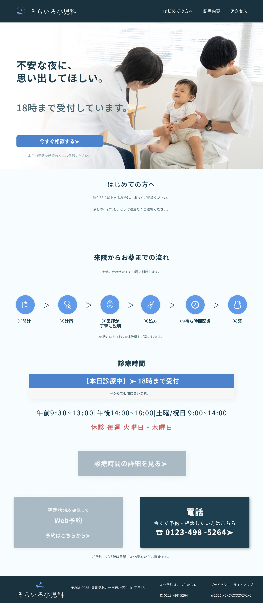
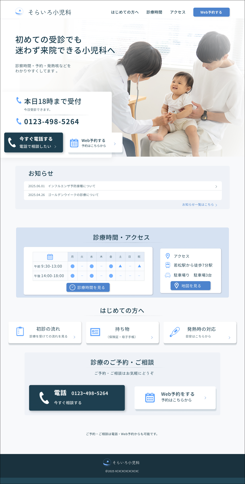
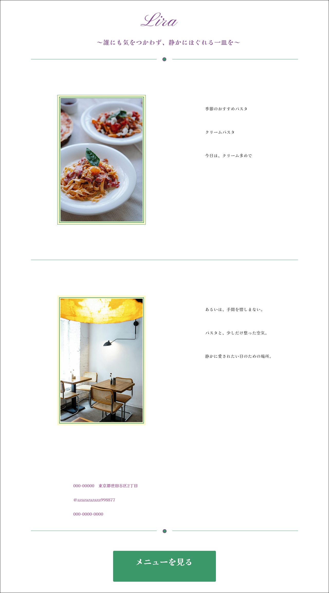
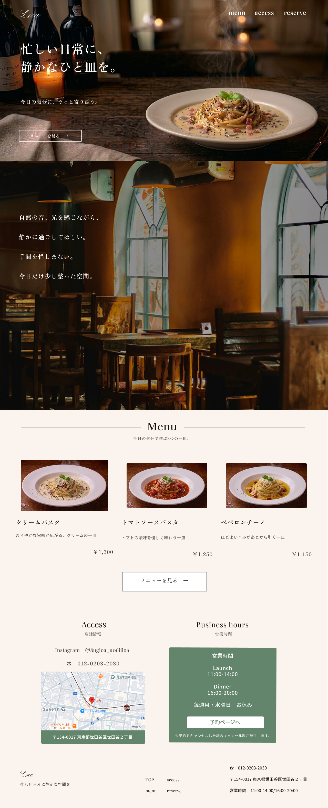
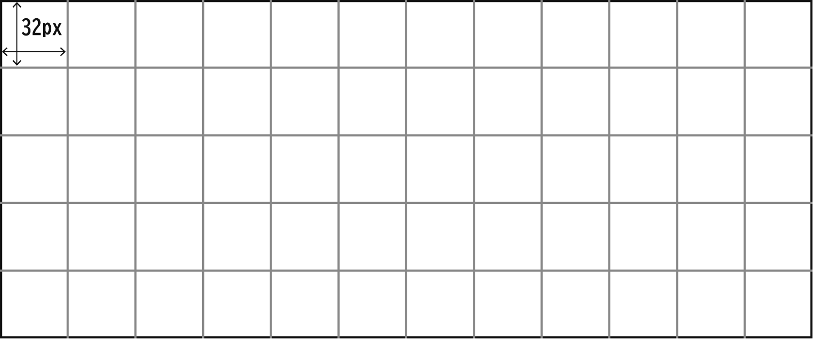
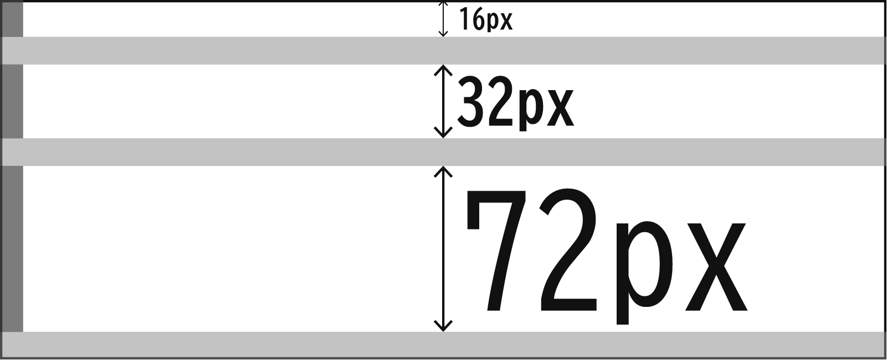
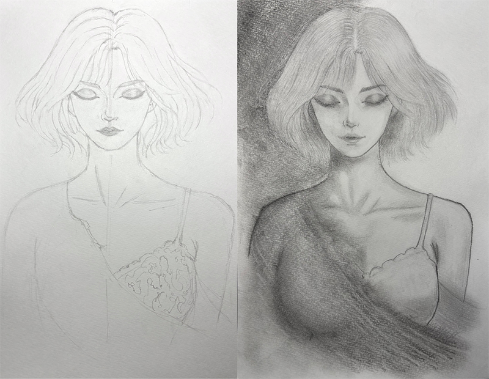

Project 01
小児科医療サイト リニューアル
担当：情報設計/UI設計/HTML・CSS
BEFORE

AFTER

課題：予約導線より説明情報が先に目に入り、初診ユーザーが行動づらい。
設計：ファーストビューに予約・電話・診療時間を集約し、判断順に情報を再配置。
意図：初診ユーザーが迷わず行動できるよう、必要な情報をすぐ見つけられる構成にした。
Project 02
飲食店サイト リニューアル
担当：情報整理/UI設計/HTML・CSS
BEFORE

AFTER

課題：料理・空間・利用導線の情報が不足し、来店前の判断材料が少ない。
設計：メニュー写真、店内の雰囲気、アクセス情報を整理して追加し、来店目的が想像できる構成に再設計。
意図：来店前に店の世界観と利用導線が伝わるよう、情報の種類と順序を整理した。
Structure Sketch
デザインの基礎原則を、UI設計に応用する。

グリッド
横幅と整列基準を揃え、
情報を整理する。

重心
主要要素を中心に集め、静かで、
安心した閲覧導線を作る。

余白
情報のまとまりごとに、距離を
つくり、視線の迷いを減らす。
About
菅勇也
使用ツール：Figma・Photoshop・Illustrator
・HTML/CSS・JavaScript（学習中）
製造業で培った再現性と優先順位の整理を活かし、
迷いなく伝わるUI設計・実装を一貫して行います。
担当範囲：情報設計 / UI設計 / HTML・CSS
Personal Art
Structure
Density

構造を捉え、密度で印象をつくる。
この視点を、画面設計にも生かしています。